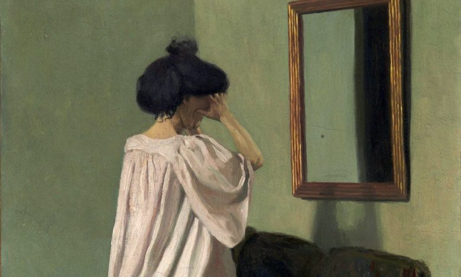

Waht are Mirrors for? – Irina Symons

Imagine a world without mirrors. A world with no shiny surfaces, a world in which nothing had reflective properties. What
would be missing from a world with no mirroring possibility? Can we conceive of a human world in which mirrors do not exist?
In this short essay I do not intend to give definitive explanations of our relationship with the mirrors around us, but to
explore the complexity of this relation. I would like to have you consider mirrors not as merely, or primarily practical
devices for our getting around the everyday, but as tools towards revealing what it is to be human, and what it is to be a
particular person. I would like you to think of mirrors as spiritual devices.I want to argue that the capacity to recognize a
reflection, the access to the concept of reflection, and the need to produce reflections have to precede the attempt to produce
objects with such properties. It is not by mere chance that we have mirrors; we don’t look into mirrors simply because they
happen to be around. The animal world, as a rule, lacks mirrors, and not because there are no shiny surfaces in their world.
But rather because animals, with some exceptions, do not recognize their own reflection. They....(to complete reading this
article ) click here (and if you wantread this article in Arabic language
) click here.